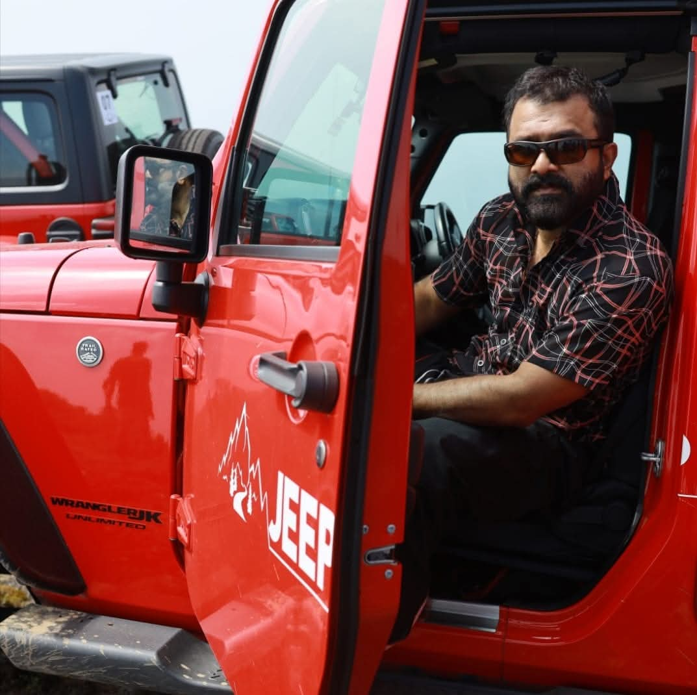

Biography
Dr. Shaju began his career as a dentist but later transitioned into the Malayalam television industry, gaining fame as an actor in the iconic TV serial Jwalayayi on Doordarshan. His captivating performances and dedication earned him recognition and a loyal fan following across Kerala.
Career Highlights
- Actor in Jwalayayi, Doordarshan
- Producer of Sasneham, aired on Asianet & Disney+ Hotstar
- Actor/Producer of Chempaneer Poovu, Asianet, 2024
- Known for roles focusing on social themes and elder care
- Media appearances and interviews on Malayalam TV channels
Awards & Recognition
- Multiple accolades from Malayalam TV industry
- Recognized for contributions to social-themed productions